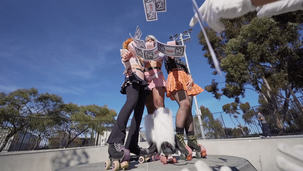
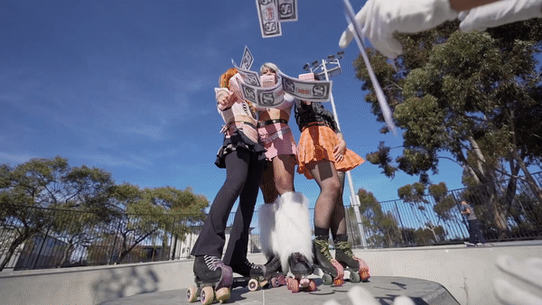

FILM/VIDEO
written, edited, and directed by Macey Keung


 

LOLA VS THE COCKALORUMS
This is an experimental comedy film about radical femininity and taking up spaces traditionally dominated by men. In this retro-futuristic film, a group of femme and non-binary skaters plot a mission to obliterate the corporate cockalorums that dominate their world.
As a young woman of color as well as a passionate skater, the “professional” world and the skate world are two spaces I often feel I am not taken seriously in. I wanted to create a film that shed light on this topic in a fun and lighthearted way, approaching the film with an experimental lens. The film starts out as more of a narrative, but eventually becomes self aware and ultimately overcomes itself, as the making of the film is equally about the act of taking up space in the skate park and in the workspace as marginalized individuals.
showcased at:
UC San Diego Film Festival
UNPOP San Diego Short Film Festival
awards:
Honorable Mention at Kamil Media Awards
to be featured at:
Les Femmes Underground International Film Festival
1 of 23 shorts chosen from over 5,000 submissions worldwide!